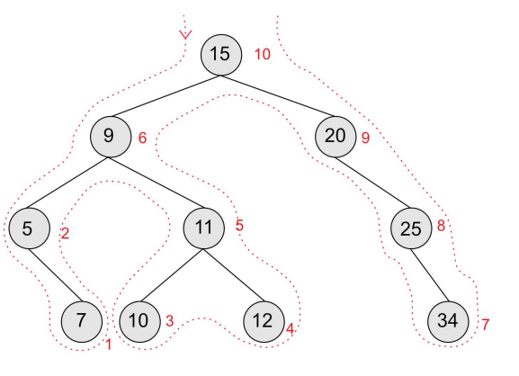

A tree is a linked non-linear data structure. To briefly explain it, a tree is a structure consisting of a single node which is called the root node and zero or more subtrees (which I will explain later) Trees will have the following generic properties: - A node which is distinguished as the root node, it is the very start of the tree and all nodes will have to somehow be linked to it (usually through other nodes and edges) - Nodes are connected by edges - Every node excluding the root will be connected by a directed edge from exactly one other node in the direction parent - child

In the above tree, the root tree has 2 sub-trees. The root node can have loads of sub-trees. Nodes with no children or sub-trees are called external nodes, or external nodes. In the above picture, 2, 10, 5, 11, and 4 are LEAVES or EXTERAL NODES.
General trees will have an unlimited value of sub-trees and child nodes.
The tree can then be accessed using traversal algorithms.
Binary Trees are a type of tree where each node has a maximum of two children. These are used to represent information for binary searches, as information in these trees is easy to search through. The most common way to represent a binary tree is storing each node with a left pointer and a right pointer. This information is usually implemented using two-dimensional arrays.
Traversing Binary Trees
There is three main ways to traverse binary trees, pre-order, in-order, post-order.
Pre-Order Traversal
Pre-order traversals follow the order: root node, left subree, then right subtree. Using the outline method, nodes are traversed in the order in which you pass them on the left, beggining at the left-hand side of the root node. The order for this traversal is: 15, 9, 5, 7, 11, 10, 12, 20, 25, 34
In-Order Traversal
In-order traversal follows the order: left subtree, root node, right subtree.
The order for this tree would be: 7, 5, 10, 12, 11, 9, 34, 25, 20, 15
Post-Order Traversal
Post order traversal follows the order of left subtree, right subtree, root node.
Order for this tree: 7, 5, 10, 12, 11, 9, 34, 25, 20, 15